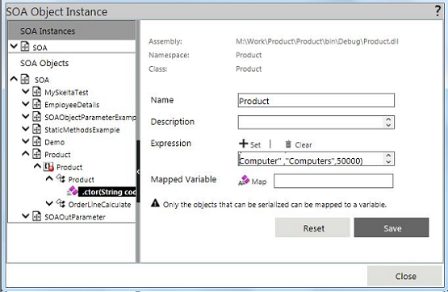
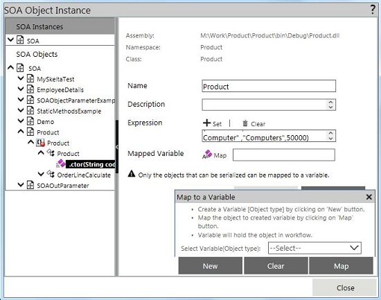
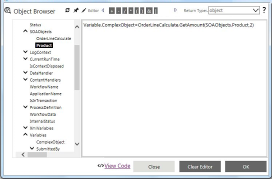
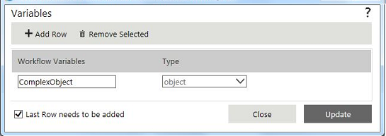

No
The below example shows how the user can create an Object Instance.
Creating an Object Instance
Instance creation is required to invoke the members of the object.
Instantiating SOA Objects
Instantiating objects can be done by making use of the constructors of the object. The SOA property editor allows to create an object instance by using constructors.
Instantiating and persisting the object instance can be done in different ways. This is explained below.
Description: In the above example, we have 'Product' object and in order to use the Product object in AVEVA Work Tasks workflows, we need to create an object instance of the 'Product'. Creating object instance can be done in the SOA property editor by using the constructor defined for the 'Product' object.
Steps:
By creating an object instance, it is possible to build an expression with the methods and properties of the 'Product' class. In the workflow, whenever an expression with the 'Product' object is encountered, the workflow engine will create an instance of the 'Product' object and resolve the expression. Instance creation happens in all the places wherever the expression is associated with the 'Product' object. In this way, the expression with methods and properties of an object gets resolved.
Description: Considering the first approach, in some scenarios there may be a requirement of storing the object and persist it in the long running workflows.
SOA object mapping provides an option to store object state in a variable. This increases the flexibility in handling the complex object in long running workflows.
Mapping an object to a variable will persist the object state in the workflow. This happens for the first time whenever an object is instantiated; when you invoke the object after that, it will return the object information which is stored in the variable. This will not only hasten the process of resolving the expression built with the object mapped to a variable, but also persist the object state in long running workflows.
Mapping an object to a variable can be done at the time of configuring the instance in the 'SOA Property' editor. This approach is explained in depth in the next topic.


Note: Only objects that are Serializable can be mapped to a variable/persist in the workflow. Variable mapping should be used only when an object needs to be persisted in long running workflows.
Description: Any object can be directly mapped to a variable without any constructor. In some scenarios, there may be a requirement to store a complex object in a variable. For e.g.: the 'Employee' object returned from a web service.


This can be done by simply assigning the object to a variable in the SOA Expression Editor.